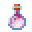

PHASE-03
PHASE-04には「新ウェポン」「新サプライ」が追加されます。
各種ウェポンの調整のほか、このフェーズではシステムが大幅に更新されます。
WEAPON ADJUSTMENTS
PHASE-03での弓師の意見を大いに受け入れ、一部ウェポンのバランスが調整されます。
釣竿 ❝FishingBow❞
・右クリックトリガーの廃止
・矢を左クリックで発射するように変更（長押しして射撃し続けられなくなりました）
・クリティカル矢をスニーク+左クリックで発射するように変更
 リーパー ❝Leaper❞
リーパー ❝Leaper❞
・エメラルドブロックをスライムブロックに変える仕様を削除
 シールド ❝Shield❞
シールド ❝Shield❞
・チャージ秒数を7秒に変更
スワッパー ❝Swapper❞
・捕捉できる余裕範囲を3ブロックから2ブロックに変更
 トラッパー ❝Trapper❞
トラッパー ❝Trapper❞
・半径5ブロックの最も近い未起動の罠を発動させる左クリックトリガーの追加
 ヴァニッシャー ❝Vanisher❞
ヴァニッシャー ❝Vanisher❞
・殺気のパーティクルの高さサイズを大幅に増加
・殺気のパーティクルの出現を、弓や釣竿を持った時からウェポンを所持していない時に変更